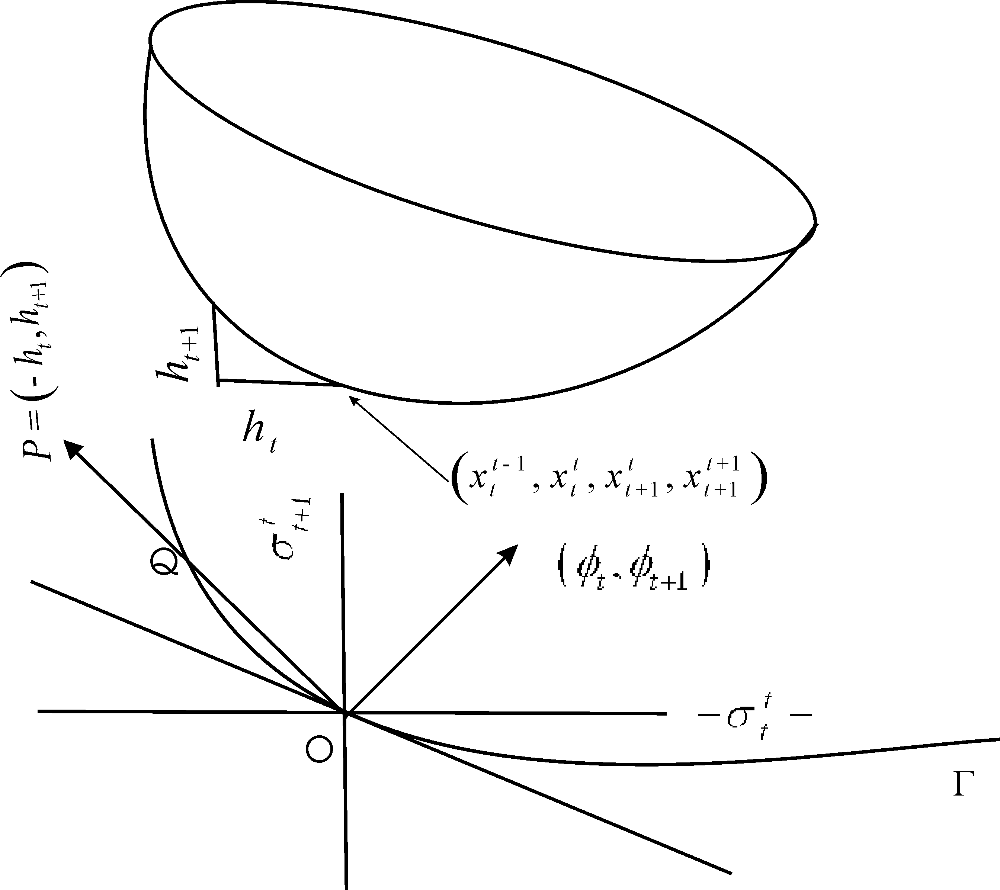

1 Introduction
This paper analyzes the role of two-sided altruism in a few areas of capital theory. A fundamental issue in capital theory is: Why the market interest rate is observed to be positive? The classical analyses of B"ohm-Bawerk and Fisher provided three causes for positive interest rate: impatience for present consumption over the future consumption, productivity over time in the production process due to factors like “round about methods of production”, and prosperity of the agents in future. Roughly speaking, these factors lead to higher demands for goods in the early years and less demands in the later years of one’s life cycle, whereas the supplies of goods are less bountiful in the early years and more bountiful in the later years; thus by the law of supply and demand, the equilibrium prices of goods fall over time, which means positive interest rate. This mechanism yields positive interest rate when there are finite number of agents and time horizon is either finite or infinite.
Samuelson (1958) introduced a pure exchange model with an infinite number of finitely lived overlapping generations stretching over an infinite time horizon. He eliminated the classical sources of positive interest rate by assuming no production, no time preference in consumption, and agents are rather more prosperous in their early years of lives. The interest rates are determined in the general equilibrium of the pure consumption-loans. He arrived at a few “paradoxical”1, “astonishing” results with “provocative” implications in the “field of social collusion”, of which we point out the ones relevant to our paper:
There is a stationary competitive equilibrium in which interest rate is equal to the population growth rate and thus he is “the first, outside a slave economy, to develop a biological theory of interest relating it to the reproductivity of human mothers” (Samuelson (1958)); the biological interest rate is socially optimum in the sense of Golden Rule or “Kant’s Categorical Imperatives”.
There exists competitive equilibrium which is not Pareto optimal and the long-run interest rate is negative.
If there is a beginning of “biological” time for the economy then the non-stationary equilibrium path never converges to the Golden rule, which is his “Impossibility Theorem”.
To overcome Pareto inefficiency of competitive equilibrium, Samuelson appealed to the Hobbes-Rosseau theory of social contract such as social security and outside money, by which intergenerational transfers from future generations to present generations are brought about.
Subsequently, Gale (1973) carried out a unified analysis of classical and Samuelsonian economies, and established dichotomies in the behavior of these economies. For instance, he showed that non-Golden rule, steady-state competitive interest rate is positive and Pareto optimal in classical economies but it is negative and not Pareto optimal in Samuelsonian economies; for any amount of initial outside money,2 while a competitive equilibrium path converges to the Golden Rule in classical economies, the equilibrium path in the Samuelsonian economies moves away from the Golden rule and converges to the “balanced” steady-state in which the interest rate is negative. He concluded that “while the Samuelson world is perfectly conceivable from a logical point of view it is probably not the one we live in - exactly because of the empirical facts adduced by Fisher relating to impatience and investment”. In this paper, introducing two-sided altruism I show that an alternative source of positive interest rate is altruism towards parents. Further, I argue that a Samuelsonian economy with negative interest rate will lead to the emergence of social norms regarding altruism towards parents, which will cast it into a classical economy; I use Sen’s meta ranking concept to develop a theory of social collusion and social norms, guiding agents to choose the intensity of their altruism towards parents.
Another important issue in the capital theory is the characterization of Pareto optimal allocations in terms of supporting prices or competitive equilibrium prices. In the finite setting, the First and Second theorems of Welfare Economics give a complete characterization of the Pareto optimal allocations: An allocation is Pareto optimal if and only if it is a competitive equilibrium allocation with a redistribution of initial endowments. In the overlapping generations set-up, Samuelson has demonstrated the failure of the First Welfare theorem. Balasko, Cass, and Shell (1980) have shown that competitive equilibrium in the pure exchange overlapping generations (OLG) economies obeys the First and the Second Welfare theorems in terms of Weak Pareto Optimality criterion (definition in the text), originally introduced in the capital theory literature by Malinvaud (1953). They have also given a complete characterization of Pareto Optimality of a competitive equilibrium allocation in terms of the competitive equilibrium prices, similar to the Cass (1972) criterion for efficiency in aggregative growth models. In this paper, I provide a similar characterization of Pareto optimal allocations in an OLG framework in which agents have altruistic and thus interdependent preferences.
On the nature of intergenerational altruistic preferences and its role in Pareto optimality of equilibrium allocations, one finds two strands of OLG growth literature. In one strand, Barro (1974) introduced non-paternalistic parental altruism, in the sense that an agent’s utility depends on his children’s utility. He showed that if every generation leaves a positive bequest for the next generation, then the competitive equilibrium with bequest is Pareto optimal and there is no role for money, social security or other government intervention. The economy behaves as if there is one infinitely lived agent. Aiyagari (1989) has, however, refined this analysis by allowing more than one heterogeneous families in every period. He showed that in certain economies there may exist multiple equilibria, some of which are Pareto optimal, while others are not Pareto optimal. The second strand of literature considers paternalistic or limited parental altruism in the sense that an agent’s utility depends on his children’s consumption ((Bernheim and Ray 1987; Kohlberg 1976; Leininger 1986; Lane and Mitra 1981-06; Phelps and Pollak 1968)). While the main focus of these papers were to study intergenerational conflicts in the subgame perfect savings behavior, Bernheim and Ray showed that subgame perfect equilibria are never Pareto optimal. The assumption of parental altruism can explain voluntary transfers from parents to children but cannot explain transfers from children to parents that are observed in many countries. Furthermore, the first strand of literature imposes inter-temporal consistency of preferences which cannot explain why parents transfer gifts and bequests with restrictions on its use.
In this paper, I extend the Samuelsonian overlapping generations framework recasting it into a Lindahl equilibrium framework. This framework can incorporate a variety of altruistic preferences including two-sided altruistic preferences and preferences which are not inter-temporally consistent. I incorporate altruism towards parents in the paternalistic parental altruism framework mentioned above, and discuss in a later section the case of non-paternalistic parental altruism. Section 2 describes the basic framework.
The existence of Lindahl equilibrium and a complete characterization of Pareto optimal allocations in terms of Lindahl equilibrium prices are carried out for general economies respectively in sections Section 3. Section 4 computes Lindahl equilibrium in economies with Cobb-Douglas two-sided altruistic utility functions. The rest of the analysis is carried out for this class of economies. It is shown that even when each generation leaves a positive bequest for the next generation, the Lindahl equilibrium need not be Pareto optimal, a higher amount of bequest maybe necessary for optimality; Gale’s results on the dichotomy in the nature of dynamics, Pareto optimality and the effect of money between Samuelsonian and classical economies are shown to carry over to the Lindahl equilibrium framework; and it is furthermore shown that when agents have sufficiently strong altruism towards their parents, the Lindahl equilibrium is always Pareto optimal.
The last result leads to the possibility of social collusion to develop and sustain social norms of the type, “honor your father and mother that it may go well with you and that you may enjoy long life on the earth”, (Fifth Commandment). In Section 5, I supplement the equilibrium theory with an ethical or moral principle based on Sen’s meta ranking and Kant’s Categorical Imperatives principles to guide agents in their choice of the degree of altruism towards their parents. Section 6 talks about how some of the results change for other preference structures. Section 7, concludes the paper.
2 Altruism and Lindahl Equilibrium: The Basic Framework
We consider a standard overlapping generations pure exchange economy. Without loss of generality, we assume stationary population, i.e., population growth rate is zero. One agent is born in each period t\ge 0 and he lives during periods t and t+1. An agent born in period t is denoted by t. Let A=\{0,1,2,\ldots \} be the set of agents in the economy. Assume that there are \ell perishable goods in each period. Agent t is endowed with an initial endowment of the t-th and t+1-st period goods, (w^t_t,w^t_{t+1})\in \mathbb{R}^{2\ell}_{+},t\in A. Let x^t_t\in \mathbb{R}^{\ell}_{+} and x^t_{t+1}\in \mathbb{R}^{\ell}_{+} be the consumption bundles of the agent t in periods t and t+1 respectively.
2.1 Two-sided altruistic preferences
We assume that agents exhibit two-sided paternalistic altruism of the following nature: Each agent derives utility from his own life time consumption and the consumption of the other family members that he can observe in his life-time. As pointed out in Section 7, the present approach extends to situations in which agents care for consumption of his future family members in periods beyond his life time and to situations where agents care about their children’s welfare as in Barro.
We assume that two-sided altruistic agent t’s preferences are represented by a utility function as follows: u^t:\mathbb{R}^{4\ell}_{+}\rightarrow \mathbb{R},\text{denoted by}u^ t(x^{t-1}_t,x^t_t,x^t_{t+1},x^{t+1}_{t+1}),t\ge 1 and u^0:\mathbb{R}^{3\ell}_{+}\rightarrow \mathbb{R},\text{denoted by}u^ 0(x^0_0,x^0_1,x^1_1),\text{for agent }t=0. We follow the standard convention of indexing goods by time and physical characteristics. Thus, the bundles of goods available in each period t\ge 0 are represented by vectors in \mathbb{R}^{ \infty} with the convention that for any such vector, the first \ell components correspond to the $ $ goods of period t=0, followed by the next period’s \ell goods and so on. A possible consumption bundle of agent t is a vector,
x^t=(0,0,\ldots .,0,x^t_t,x^t_{t+1},0,\ldots .)\in \mathbb{R}^{\infty}, \text{ where }x^t_t,x^t_{t+1}\in \mathbb{R}^{\ell} Let \mathcal{X}^t be the set of all possible consumption bundles of agent t.
Agent t has an initial endowment
w^t=(0,0,\ldots .,0,w^t_t,w^t_{t+1},0,\ldots .)\in \mathbb{R}^{\infty}_{ +}
The aggregate endowment is denoted by w=\Sigma_{\alpha\in A}w^{\alpha}. Denote by p_t\in \mathbb{R}^{\ell} the present value prices of the \ell goods that are available in period t,t\ge 0. Let \mathbf{p}=(p_t)^{\infty}_0\in \mathbb{R}^{\infty} be the price vector whose indexing follows the same convention of the consumption vectors in \Re^{\infty}. We define the value of a commodity bundle x=(x_0,x_1,...)\in \mathbb{R}^{\infty}_{+}, x_i \in\Re^{\ell}_{+}, \forall i\ge 0, at a price vector \mathbf{p}=(p_0,p_1...)\in \mathbb{R}^{\infty}_{+}, p_ i\in\Re^{\ell}_{+}, \forall i\ge 0 by \mathbf{p}.x=\lim \inf_{n\rightarrow\infty}\Sigma^n_{t=1}p_t.x_t, where p_t.x_t denotes the usual inner product in \mathbb{R}^{\ell}. The reason for using liminf instead of limit is that the limit may not exist for all possible x\in\Re^{\infty} and \mathbf{p}\in\Re^{\infty}. An allocation is (x^{\alpha})_{ \alpha\in A} such that x^{\alpha}\in \mathcal{X}^{\alpha},\alpha\in A, i.e., an allocation specifies the consumption bundles of each consumer. An allocation (x^{\alpha})_{\alpha\in A} is attainable if \Sigma_{\alpha\in A}x^{\alpha}=\Sigma_{\alpha\in A}w^{\alpha}.
2.2 On equilibrium concepts
The assumption of two-sided altruism imposes consumption externality among family members, and hence the standard Arrow-Debreu competitive equilibrium concept does not apply. For finite economies with consumption externalities, the Arrow-Debreu equilibrium concept has been extended by McKenzie (1955), and Kenneth J. Arrow and Hahn (1971). Kenneth J. Arrow and Hahn (1971) (see pp.132-136) define a noncooperative competitive equilibrium (see Cornwall (1984)) to be a price vector and a feasible allocation such that given other agents’ equilibrium choices of consumption bundles every agent’s equilibrium consumption bundle maximizes his utility within his budget set. However, their equilibrium notion does not allow for exchanges of gifts among agents who are affected by common consumption externalities. Since they live together, it is expected that, under a noncooperative competitive equilibrium allocations, there will be scope for renegotiation among household members, that is, one member might like to give a gift to another member that makes both better off than the noncooperative competitive equilibrium allocation.
Goldman (1978), on the other hand, defines a feasible allocation to be a gift equilibrium if there does not exist possible transfers from one another that can make everybody better off. In his equilibrium framework, markets are absent.
It is clear that since family members have consumption externality, a family member would like to subsidize the consumption of another family member if he is not consuming enough from the viewpoint of the former. The subsidies may take the form of lump-sum transfers or the form of price subsidies. Agents will have conflicting preferences about the preferences over different consumption bundles, price-subsidies will be a more reasonable behavior in our context. Furthermore, the intergenerational transfers will affect an individual’s budget constraint and hence his demands/supplies and hence the equilibrium prices in all markets; this in turn will affect the amount of gifts and price-subsidies that the agent want to make. We need the following concepts to give a formal definition of the equilibrium concept:
A feasible family gift by agent t,t\in A under an allocation (x^{\alpha})_{\alpha\in A} is a vector \mu^t=(0,\ldots ,0,\mu^ t_{t-1},\mu^t_{t+1},0,0,\ldots )\in \mathbb{R}^{\infty} such that \mu^t_{t-1},\mu^t_{t+1}\in \mathbb{R}^{\ell}_{+},x^t_t-\mu^t_{ t-1}\ge 0,x^t_{t+1}-\mu^t_{t+1}\ge 0, and he is better off after giving the gift, where \mu^t_{t-1},\mu^t_{t+1} are respectively the commodity bundles of the t-th and t+1-st period goods given as gifts by agent t to respectively his parents and children to augment their consumption of goods under the allocation. A feasible family gift by an agent t\in A is acceptable if the recipients are at least as well off after receiving the gifts as they were before receiving the gifts. A vector \sigma^t=(\sigma^ t_{t-1},\sigma^t_{t+1}), \sigma^t_{t-1}, and \sigma^t_{t+1},\in \mathbb{R}^{\ell}_{+} denotes agent t’s vector of price subsidies, where \sigma^t_{t-1} is the price subsidies to his parents t-1 for each unit of his parent’s consumption of t period goods, and \sigma^ t_{t+1} is the vector of price subsidies to his child t+1 for each unit of his child’s consumption of t+1 period goods. Since there is no predecessor to agent 0, \sigma^0=\sigma^0_1.
Definition 1 A competitive equilibrium with price subsidies is a price vector \bar{\mathbf{p}}\in \mathbb{R}^{\infty}_{+},a set of price subsidies vectors (\bar{\sigma}^{\alpha})_{\alpha\in A} and an allocation (\bar {x}^{\alpha})_{\alpha\in A} such that
- \Sigma_{\alpha\in A}\bar {x}^{\alpha}=\Sigma_{\alpha \in A}w^{\alpha}
- For each t\ge 1, \bar {x}^t maximizes u^t(\bar {x}^{ t-1}_t,x^t_t,x^t_{t+1},\bar {x}^{t+1}_{t+1}) subject to (\bar {p}_t-\bar{\sigma}^{t-1}_t).x^t_t+(\bar {p}_{t+1}-\bar{\sigma}^{ t+1}_t).x^t_{t+1}\le \bar{\mathbf{p}}.w^t-\bar{\sigma}^t_{t-1}.\bar { x}^{t-1}_t-\bar{\sigma}^t_{t+1}.\bar {x}^{t+1}_{t+1} and \bar {x}^0maximizes u^0(x^0_0, x^0_1, \bar {x}^1_1) subject to \bar {p}_0x^0_0+(\bar {p}_1-\bar{\sigma}^1_0).x^0_1\le \bar{\mathbf{p}}.w^0 - \bar{\sigma}^0_1.\bar {x}^1_1.
- For no agent \alpha\in A, there exists a feasible acceptable gift \mu^{\alpha} under the allocation \{\bar {x}^{\alpha}\}_{ \alpha\in A}.
The acceptability requirement in the above definition rules out the gift of the magi situations, namely one family member may like to give a gift to another member because his marginal utility from his own consumption of the gift is smaller than the marginal utility he derives from the latter family member’s consumption of the gift. Therefore, such a gift is feasible from his point of view. However, from the point of view of the recipient, if his marginal utility from his consumption of the gift is less than the marginal utility he derives from the consumption of the gift by the donor member, such a gift is not acceptable by the recipient. Also note that this gift of the magi situation does not arise when inter-temporal consistency of preferences is assumed.
2.3 Lindahl Equilibrium
Since intergenerational altruism introduces consumption externality, we extend the concept of Lindahl equilibrium to the overlapping generations context, and then show that the Lindahl equilibrium is also a competitive equilibrium with price subsidies.
I follow Kenneth J. Arrow (1969) approach for economies with a finite number of agents and commodities to reformulate the Lindahl equilibrium as Walrasian equilibrium of an Arrow-Debreu economy, augmenting the original commodities with extended commodities. For each good that generates externality, and for each pair of agents involved either as a generator or as a receiver of externality of such a good, an artificial market is created.
The commodities defined earlier will be called regular commodities and will be denoted as x=(x_0,x_1,\ldots x_t\ldots ), where x_t\in \mathbb{R}^{\ell}_{+} is a vector of t-th period commodities, t\ge 0. In the regular commodity vector, consumption x_0 by agent 0 does not create externality to anybody and will be called private good, and consumption of all other goods x_t,t>0 cause externality and they will be called externality generating goods. In addition to these regular commodities, for each externality generating good, say g, and for each pair of agents say s and r that are affected by the externality one as a generator or server say s, and the other r as the receiver, define two externality goods rsg and ssg. The commodity rsg is interpreted as the agent r’s perception about agent s’s choice of good g. The commodity ssg is then the agent s’s perception about his own consumption of commodity g. Moreover, since s also consumes g and creates an externality for r, define two more externality goods srg and rrg treating r as the server and s as the receiver. Note that the commodities srg and rsg are distinct. The bundle of externality goods that are perceived by agent t is denoted for t\ge 1 by
q_t=(q_{tt-1t},q_{ttt},q_{ttt+1},q_{tt+1t+1}),\text{where each component} \in \mathbb{R}^{\ell}_{+} and for t=0 by q_0=(q_{001},q_{011}),\text{where each component}\in \mathbb{R}^{ \ell}_{+}. Notice that the components of q_t are nothing but the consumption vector of regular goods, \left(x^{t-1}_t,x^t_t,x^t_{t+1},x^{t+1}_{t+1}\right) in disguise. A bundle of externality goods is a vector q=(q_0,q_1,\ldots .,q_t,\ldots )\in \mathbb{R}^{\infty}_{+}.
Let us denote a possible consumption bundle of externality goods of agent t by the vector q^t=\left(0,...,0,q_t,0,...\right)\in\Re^{\infty},t\ge 0 An extended commodity bundle is a vector \tilde {x}=(x\mid q)\in \mathbb{R}^{\infty}_{+} which is a bundle of regular and externality goods. Initial endowment of extended goods for agent \alpha ,\alpha\in A, is then \tilde {w}^{\alpha}=(w^{\alpha}\mid 0). Let the extended consumption set of agent t,t\in A be denoted by \tilde {\mathcal{X}}^t\subset \mathbb{R}^{\infty}_{ +}. Although the agent t may consume only \tilde {x}^t=(0\mid q^t) when t\ge 1, and \tilde { x}^t=(x^0\mid q^0) when t=0, without loss of generality we assume that if he wishes he can consume any extended good that is available in the market, i.e., \tilde {\mathcal{X}}^{\alpha}=\mathbb{R}^{\infty}_{+}, for each \alpha\in A.
For each agent \alpha\in A, a preference ordering \succeq_{ \alpha} on \tilde {\mathcal{X}}^{\alpha} is induced from his original utility function u^{\alpha} on \mathcal{X}^{ \alpha}as follows: Corresponding to \alpha\ge 1, define
\text{ for any }\tilde {x}=(0 q^{\alpha}),\tilde { x}^{*}=(0 q^{*\alpha})\in\tilde {\mathcal{X}}^{\alpha},\tilde {x}\succeq_{ \alpha}\tilde {x} ^{*}\Longleftrightarrow u(q^{\alpha})\ge u(q^{*\alpha} ) \tag{1} and corresponding to agent \alpha =0, define \text{for any }\tilde {x}=(x^0 q^0),\tilde {x}^{*} =(x^{*0} q^{*0})\in\tilde {\mathcal{X}}^{\alpha},\tilde {x}\succeq_0 \tilde {x}^{*}\Longleftrightarrow u(x^0,q^0)\ge u(x^{*0},q^{*0}) \tag{2}
The extended commodity space \tilde {\mathcal{X}}^{\alpha} together with the induced preference ordering \succeq_{\alpha} on \tilde {\mathcal{X}}^{\alpha} describe the demand side of the regular and externality goods. To provide the supply side of the extended commodities, we introduce the following externality distribution technologies:
To each agent t,t\in A, assign an externality production possibility set in the extended commodity space \mathbb{R}^{\infty} as follows: For agent t=0, define
\tilde {Y}^0=\left\{((0,-x_1,0\ldots )\mid\left((\overbrace {(x_ 1,0)}^{q_0},\overbrace {(x_1,0,0,0)}^{q_1},0,\ldots )\right)\in \mathbb{R}^{ \infty} x_1\in \mathbb{R}^{\ell}_{+}\right\} and for any other agent t, t\ge 1, define
\tilde {Y}^t=\left\{ \begin{array}{r} \left((..,0,-x_t,-x_{t+1},0..)\mid (..,0,\overbrace {(0,0,0,x_t)}^{ q_{t-1}},\overbrace {(0,x_t,x_{t+1},0)}^{q_t},\overbrace {(x_{t+1} ,0,0,0)}^{q_{t+1}},0,\ldots )\right) \\ \in \mathbb{R}^{\infty}\text{ such that }(x_t,x_{t+1})\in \mathbb{R}^{ 2\ell}_{+} \end{array} \right\} The interpretation of the production set \tilde {Y}^t corresponding to agent t is that he purchases (x_t,x_{t+1})\in \mathbb{R}^{2\ell}_{ +} from the regular goods markets and produces four output vectors, two for his own consumption and the other two are the externalities created by his consumption of these goods, namely, q_{t-1tt}=x_t,q_{ttt}=x_t,q_{ttt+1}=x_{t+1}, and q_{t+1tt+1}=x_{ t+1}. Note that each \tilde {Y}^{\alpha},\alpha\in A is a convex cone in \mathbb{R}^{ \infty} and each exhibits joint production. The aggregate externality production technology is defined by \tilde {\mathbf{Y}}=\sum^{\infty}_{t=0}\tilde {Y}^t It is apparent that \tilde {\mathbf{Y}} does not and cannot contain -\mathbb{R}^{\infty}_{+}. That is free disposal does not make sense for the externality production technology. Moreover, \tilde {\mathbf{Y}} does not have a nonempty interior in \mathbb{R}^{\infty} with respect to the \sup-norm topology as is generally assumed for the existence of equilibrium in linear production economies.
The vector of present value prices of the extended commodities is \tilde{\mathbf{p}} = (\mathbf{p}\mid \pi )\in \mathbb{R}^{\infty }, where \mathbf{ p} is the price vector of the regular goods as defined earlier, and \pi is the vector of prices for the externality goods. The price of any externality good say srt will be correspondingly denoted by \pi _{srt}. The value of an extended commodity bundle \tilde{x} evaluated at a vector of extended prices \tilde{\mathbf{p}} is defined as \tilde{x}.\tilde{\mathbf{p}} =\lim \inf_{n\rightarrow \infty }\sum_{t=1}^{n}(p_{t}.x_{t}+\pi _{t}.q_{t}). An attainable allocation is \left( \tilde{x}^{\alpha },\tilde{y}^{\alpha }\right) _{\alpha \in A} such that \tilde{x}^{\alpha }\in \tilde{\mathcal{X}} ^{\alpha }, and{y}^{\alpha }\in \tilde{Y}^{\alpha }, for all \alpha \in A and
\sum_{\alpha \in A}^{{}}\tilde{x}^{\alpha }=\sum_{\alpha \in A}^{{}}\left( \tilde{y}^{\alpha }+\tilde{w}^{\alpha }\right)
Definition 2 A Lindahl Equilibrium for the economy \mathcal{E}=\left<\tilde {\mathcal{X}}^{\alpha},\tilde {\mathbf{Y}}^{\alpha},\tilde w^{\alpha},\succeq_{ \alpha}\right>_{\alpha\in A} is an extended price vector \tilde {\mathbf{p}}^{*}\in \mathbb{R}^{\infty}_{ +}, and an allocation \left(\tilde x^{\alpha *},\tilde y^{\alpha *}\right)_{\alpha\in A} such that for each \alpha\in A,
- \tilde {\mathbf{p}}^{*}.(\tilde {x}^{\alpha *}-\tilde {w}^{ \alpha})\le 0,\text{ and }\tilde {x}^{\alpha}\succ_{\alpha}\tilde { x}^{\alpha *}\Rightarrow\tilde {\mathbf{p}}^{*}.\tilde {x}^{\alpha}> \tilde {\mathbf{p}}^{*}.\tilde {x}^{\alpha *}
- \tilde {\mathbf{p}}^{*}.\tilde {y}^{\alpha *}=0,\text{and } \tilde {\mathbf{p}}^{*}.\tilde {y}^{\alpha}\le 0,\text{ for all }\tilde { y}^{\alpha}\in\tilde {Y}^{\alpha}
- \sum^{\infty}_{\alpha =0}\tilde {x}^{\alpha *}=\sum^{ \infty}_{\alpha =0}\tilde {y}^{\alpha *}+\sum^{\infty}_{\alpha =0} \tilde {w}^{\alpha}.
Applying condition (2) in the definition of Lindahl equilibrium on \alpha =t and \alpha =t-1, it is easy to see that the Lindahl equilibrium prices satisfy the following constraints: \forall t\ge 1, \left\{ \begin{array}{ccl} p_t &= \pi_{t-1tt}+\pi_{ttt} \\ & & \\ p_t &= \pi_{t-1t-1t}+\pi_{tt-1t} \end{array} \right. \tag{3}
The first equation in Equation 3 means that the public price of the private goods in period t, p_t equals the sum of the private prices \pi_{t-1tt} and \pi_{ttt} of the public good, i.e., the externality good generated by t’s consumption of the t-th period goods. Similar is the interpretation of the second equation.
The following is proved in Raut (2006).
Proposition 1 A Lindahl equilibrium is also a competitive equilibrium with price subsidies.
3 Pareto Optimality and Lindahl Equilibrium
In this section I provide a complete characterization of Pareto optimal allocations in terms of Lindahl equilibrium prices. The concept of weak Pareto optimality criterion, later known as Malinvaud optimality criterion, was first introduced to the capital theory literature by Malinvaud (1953) in the context of intertemporal production economies. In his pure exchange OLG set-up, Samuelson showed that competitive equilibrium is not Pareto optimal, and thus the First Welfare theorem does not hold in the OLG set-up. Balasko, Cass, and Shell (1980), however, showed that the First and Second welfare theorems hold with respect to the Malinvaud optimality criterion, namely: In pure exchange OLG economies, every competitive equilibrium is Malinvaud optimal and any Malinvaud optimal allocation could be attained as a competitive equilibrium after suitable redistribution of the initial endowments. They also gave a complete characterization of Pareto optimal allocations in terms of competitive equilibrium prices. We extend these results to our Lindahl equilibrium set-up with inter-dependent preferences.
An attainable allocation \left\{x^t\right\}_{t\ge 0} in the regular commodity space is Pareto Optimal if there does not exist another attainable allocation \left\{z^t\right\}_{t\ge 0} in the regular commodity space such that u^t(z^t)\ge u^t(x^t), for all t \ge 0 with strict inequality for some t. An attainable allocation (\tilde {x}^{\alpha},y^{\alpha})_{ \alpha\in A} in the extended commodity space is Pareto optimal if there does not exist another attainable allocation (\tilde {x}^{^{\prime}\alpha}, \tilde {y}^{^{\prime}\alpha} )_{\alpha\in A} such that \tilde {x}^{^{\prime}\alpha}\succeq_{\alpha}\tilde { x}^{\alpha}, with strict preference for some \alpha\in A. An attainable allocation of regular goods \{x^t\}_{t\in A} is Weakly Pareto Optimal or Malinvaud Optimal if there does not exist another attainable allocation \{z^t\}_{t\in A} and a \tau\ge 1 such that x^t = z^t for all t\ge\tau and u^t(z^t)\ge u^t(x^t) for all t\ge 0 with strict preference for at least one t. The definition of Weak Pareto optimality for attainable extended commodity bundles is similar.
From the construction in section it follows that to each attainable allocation \{x^t\}_{t\in A} in the regular commodity space, there corresponds a unique attainable allocation (\tilde {x}^{\alpha},\tilde {y}^{\alpha})_{\alpha\in A} in the extended commodity space and vice versa. Utilizing the definitions in equations Equation 1 and Equation 2, it follows that an attainable allocation \{x^t\}_{ t\in A} in regular commodity space is Pareto optimal (Malinvaud Optimal) if and only if the associated attainable allocation in the extended commodity space, (\tilde {x}^{\alpha},\tilde {y}^{\alpha} )_{\alpha\in A} is Pareto optimal (Malinvaud optimal).
The following theorem is the analogue of the First and Second Welfare theorems, see Raut (2006) for a proof.
Theorem 1 A Lindahl equilibrium is Malinvaud Optimal and any Malinvaud optimal allocation could be supported by a vector of Lindahl equilibrium prices.
An attainable allocation is Pareto optimal implies that it is also Malinvaud optimal, which according to the above proposition is also a Lindahl equilibrium allocation. A complete characterization of Pareto optimal allocations boils down to the question: Under what conditions a Lindahl equilibrium allocation is Pareto optimal? We provide necessary and sufficient conditions in theorem Theorem 2 below.
For ease of exposition, we present only the case of \ell =1. Let us fix a Lindahl equilibrium allocation of regular goods, x=(x_0,...,x_t,...) and let us denote by \tilde {x} and \tilde { p} the associated Lindahl equilibrium extended commodity allocations and the price vectors. Allocation x will be Pareto optimal if and only if there does not exist a Pareto improving intergenerational transfers scheme. We want to find when we can and when we cannot find a feasible Pareto improving intergenerational transfer scheme over \tilde {x}.
We make the following smoothness assumption on utility functions:
Assumption assn4:
For all t\ge 0, the utility function U^t is of class C^2.
Let us denote the indifference surface of agent t, t\ge 1 by
S^t=\left\{q_t\in\Re^4 u(q_t)=u(x^{t-1}_t,x^t_t,x^t_{t+1},x^{t+ 1}_{t+1})\right\}
Note that S^t is a 3-dimensional smooth manifold embedded in \Re^4.
Suppose the Lindahl equilibrium allocation \tilde {x} is not Pareto optimal. Then, there is a time period in which an intergenerational transfer is initiated; without loss of generality, suppose in period 1 the amount h_1 is taxed on agent 1, which is given as subsidy to agent 0. Let us assume that this makes agent 0 better off but agent 1 is definitely worse-off, otherwise \tilde {x} could not be a Lindahl equilibrium. To off-set his utility loss, he must be given more of the other extended goods that affect his utility. More precisely if his consumption of q_{111}=x^1_1 is reduced by h_1 units, he must be given combinations of tax-subsidies, \tau_{101}, \tau_{111}, and \tau_{121} respectively of the externality goods 101,111,121 so that he is put back in his indifference surface passing through his Lindahl equilibrium consumption vector. It may appear that there are many such combinations, but given the structure of the consumption externality, the tax-subsidy combinations of the externality goods will take a restricted form, -h_1, h_2, -h_ 2 respectively of the goods 101,111,121.
Note that to make agent 1 as well-off as in \tilde {x}, agent 2 is to be taxed h_2 amount of the externality good 222 . To put agent 2 back in his indifference surface, agent 3 is to be similarly taxed by the amount, h_3. This tax-subsidy process continues ad infimum.
In the above, the Pareto improving transfer could take the form that agent 0 in period 1 is taxed h_0, which is given as subsidy to agent 1, i.e., h_1<0. This will involve taxing agent 1 in period 2 and give it as subsidy to agent 3. The process continues ad infimum. Let us have the convention that when h_t<0, it denotes the amount of subsidy to agent t, and when h_t>0, it denotes the amount of tax of agent t. When can we find a Pareto improving intergenerational transfers scheme, h=(h_0,h_1,...h_t),h_t\in\Re ,h_0=-h_1, and h_1\ne 0, such that the associated tax-subsidies of the subsequent generations remain feasible in all periods? To that end, note that the combinations of the above type of tax-subsidies of the extended goods form a 1-dimensional submanifold (i.e., a curve) in the 3-dimensional indifference surface passing through agent t’s Lindahl equilibrium consumption vector; this curve could be parameterized by the graph of a function h_{t+1}=\psi_t(h_t), where \psi_t:\Re\to\Re is implicitly defined in the following relation:
U^t(x^{t-1}_t+h_t,x^t_t-h_t,x^t_{t+1}+h_{t+1},x^{t+1}_{t+1}-h_{ t+1})=\bar {U}^t
where \bar {U}^t is the utility level of agent t under the allocation \tilde {x}. In the coordinate space \Re^2, this curve is denoted as \Gamma in figure Figure 1.3

To find conditions when we can and when we cannot find Pareto improving feasible inter-generational transfers schemes, we need a few more notations. For t\ge 1, denote agent t’s preferred set by
\breve {H}^t=\left\{\left(h_t,h_{t+1}\right) q^t+\tilde h^t\succeq_ tq^t\right\} where q^t=(0|0,...0,(x^{t-1}_t,x^t_t,x^t_{t+1},x^{t+1}_{t+1}),0, ...) and \tilde {h}^t=(0|0,...0,(-h_t,h_t,h_{t+1},-h_{t+1}),0,...). Given assumption A., \breve {H}^t is a closed convex subset of \Re^2.
Let us denote by \phi_t\equiv\pi_{ttt}-\pi_{\text{tt-1t}}. Notice that applying Equation 3 for t+1, we have
\begin{array}{ccl} \pi_{\text{ttt+1}}-\pi_{\text{tt+1t+1}} &= p_{t+1}-\pi_{t+1tt+1}-\left (p_{t+1}-\pi_{t+1t+1t+1}\right) \\ & & \\ &= \phi_{t+1} \end{array}
Thus, the present value of the net transfer to agent t is
\begin{array}{ccl} \mu_t &= \left(\pi_{\text{ttt+1}}-\pi_{\text{tt+1t+1}}\right)h_{t+ 1}-\left(\pi_{ttt}-\pi_{\text{tt-1t}}\right)h_t \\ & & \\ &= \phi_{t+1}h_{t+1}-\phi_th_t \end{array}
From the above we have
\begin{array}{ccc} \phi_{t+1}h_{t+1} &= \phi_th_t+\mu_t \\ & & \\ &= \phi_1h_1+\sum_{\tau =1}^t\mu_{\tau} \end{array} \tag{4}
For any given bounded sequence of non-zero numbers, h=(h_0,h_1,...,h_t,..), such that h_0+h_1=0 and the associated \mu_t>0, \forall t\ge 1, define
\eta_t=\left\{ \begin{array}{ll} 1 & \text{if }(-h_t,h_{t+1})\in\breve {H}^t \\ & \\ \inf\left\{\lambda >0 (-\lambda h_t,\lambda h_{t+1})\in\breve H^t\right \} & \text{ otherwise} \end{array} \right. \tag{5}
Note that \eta_t\le 1 for all t\ge 1. For instance, corresponding to the the point P=(-h_t,h_{t+1}), h_t,h_{t+1}>0 in figure Figure 1, we have \eta_t=\frac {\text{PQ}}{\text{OP}}. From figure Figure 1, it is obvious that the value of \eta_t depends on the curvature of the indifference curve \Gamma. The following theorem gives the necessary and sufficient conditions for Pareto optimality of Lindahl equilibrium allocation, see Raut (2006) for a proof.
Theorem 2 Let x=\left(x^0,x^1,...x^t,...\right) be an allocation of regular goods corresponding to a Lindahl equilibrium allocation of extended goods, \tilde {x}=\left(\tilde x^0,\tilde x^1,...,\tilde x^t,...\right), and extended prices, \tilde{\pi }=\left(p|\pi\right) such that
- \phi_t\equiv\pi_{ttt}-\pi_{tt-1t}>0 \forall t\ge 1
- \pi_{001}-\pi_{011}>0
- there exists \underline {\rho},\bar{\rho }>0 such that \underline { \rho}<\frac {\phi_t}{\phi_{t+1}}<\bar{\rho} \forall t\ge 1
- curvatures of the indifference surfaces of all agents are such that for any sequence h=(h_0,h_1,...), 0<h_t\le x^t_t, t\ge 1 the associated sequence \{\eta_t\}_1^{\infty} defined in Equation 6 is uniformly bounded away from below, i.e., there exists 1>\underline {\eta}>0 such that \eta_t\ge\underline {\eta} for all t\ge 1
- \left(x^t_t,x^t_{t+1}\right) is uniformly bounded away from below and above.
Then, \tilde {x} is Pareto optimal \sum_{t=1}^{\infty}\frac 1{\phi_t}=\infty.
The result could be easily extended to \ell >1, without much difficulty, and it does not give any extra economic insights, so it is omitted. Balasko, Cass, and Shell (1980) impose a uniform Gaussian curvature restriction which implies property (d) in the above proposition.
4 The Cobb-Douglas Economy
Consider a class of economies in which \ell =1, initial endowments are given by (w^t_t,w^t_{t+1})=(w_1,w_2)\in \mathbb{R}^ 2, w_1,w_2>0 for t\in A and the utility functions of the agents are \begin{array}{ccc} u^0(x^0_0,x^0_1,x^1_1) &= \alpha^{*}\ln x^0_0+\beta\ln x^0_1+\gamma\ln x^1_1 \end{array} where \alpha^{*},\beta ,\gamma >0 and \alpha^{*}+\beta +\gamma =1.
u^t(x^{t-1}_t,x^t_t,x^t_{t+1},x^{t+1}_{t+1})=\delta\ln x^{t-1}_ t+\alpha\ln x^t_t+\beta\ln x^t_{t+1}+\gamma\ln x^{t+1}_{t+1},t\ge 1 where \alpha ,\beta ,\gamma ,\delta >0, and \alpha +\beta +\gamma +\delta =1. In the remainder of the paper we will use \alpha, \beta ,\gamma and \delta to denote the above utility weights.
The utility maximization problem of the adult of generation t could be now stated as \begin{aligned} \begin{array}{c} \max U_t=\delta\ln q_{tt-1t}+\alpha\ln q_{ttt}+\beta\ln q_{ttt+1} +\gamma\ln q_{tt+1t+1} \\ \text{subject to} \\ \pi_{tt-1t}q_{tt-1t}+\pi_{ttt}q_{ttt}+\pi_{ttt+1}q_{ttt+1}+\pi_{t t+1t+1}q_{tt+1t+1}\le p_tw_1+p_{t+1}w_2 \end{array} \end{aligned} \tag{6}
Denoting by y_t\equiv p_tw_1+p_{t+1}w_2, \pi^1_t\equiv\pi_{ttt}, and \pi^2_t\equiv\pi_{ttt+1} for all t\ge 0, we have the following characterization of Lindahl equilibrium: Lindahl equilibrium is a sequence of prices \left\{\left(p_t,\pi^1_t,\pi^2_t\right)\right\}_0^{\infty} such that \frac {\alpha (p_tw_1+p_{t+1}w_2)}{\pi^1_t}+\frac { \beta (p_{t-1}w_1+p_tw_2)}{\pi^2_{t-1}}=w_1+w_2 \tag{7} \frac {\alpha (p_tw_1+p_{t+1}w_2)}{\pi^1_t}=\frac { \gamma (p_{t-1}w_1+p_tw_2)}{p_t-\pi^1_t} \tag{8} \frac {\beta (p_{t-1}w_1+p_tw_2)}{\pi^2_{t-1}}=\frac { \delta (p_tw_1+p_{t+1}w_2)}{p_t-\pi^2_{t-1}} \tag{9} In the above, Equation 7 is the market clearing condition in period t,t\ge 1 Equation 8 - Equation 9 follows from other conditions in the definition of Lindahl equilibrium.
From Equation 8 we have \frac {p_t-\pi^1_t}{\pi^1_t}=\frac {\gamma y_{t-1}}{ \alpha y_t}\Rightarrow\pi^1_t=\frac {\alpha y_tp_t}{\gamma y_{t-1} +\alpha y_t} \tag{10} Similarly, from equation Equation 9 we have \pi^2_{t-1}=\frac {\beta y_{t-1}p_t}{\beta y_{t-1} +\delta y_t} \tag{11} Note that once we know p_t, using Equation 10, Equation 11 and Equation 3 we can compute the prices of all the externality goods. Using Equation 10 and Equation 11 we eliminate \pi^1_t and \pi^2_{t-1} in Equation 7 and after simplification we get the following second order difference equation determining p_t: [(\gamma +\beta )w_1]p_{t-1}-[(\beta +\gamma )w_1 +(\alpha +\delta )w_2]p_t+[(\alpha +\delta )w_2]p_{t+1}=0 \tag{12}
A steady-state Lindahl equilibrium for this Cobb-Douglas4 economy is an inflation factor \mu >0, such that p_t=\mu^t solves the difference equation Equation 12. The steady-state corresponding to \mu =1 is called a nominal steady state and corresponding to \mu\ne 1 is called real steady state. A real steady-state is Samuelsonian if \mu >1, and classical if \mu <1. An economy is called Samuelsonian or classical according as its real-steady state is Samuelsonian or classical. Following Samuelson’s analysis, it can be shown that nominal steady-state is socially optimal in the Golden rule sense.
Substituting p_t=\mu^t, we note that the difference equation Equation 12 becomes a quadratic equation in \mu, and the roots of this equation corresponds to the steady-state inflation factors. Note that 1 and \frac {(\beta +\gamma )w_1}{(\alpha +\delta )w_2} are the only steady-state solutions; the first one is the nominal steady-state, and the second one is the real steady state. We denote the real steady-state value of \mu by \mu^{*}. It can be shown that for more general economies with more goods and general utility functions, the nominal Golden rule steady-state always exists and that in the nominal steady-state, the old agents in each period spend either more or less than the value of their initial endowments and net voluntary transfers from family members (Raut (1990)).
Let m be the amount of real outside money injected in the economy by giving it to the old of time period 1. Then the general solution of the difference equation Equation 12 is given by
p_t=\xi_1+\xi_2\mu^{*}{}^t \tag{13} where \xi_1, \xi_2 >0 are to be determined from the equilibrium conditions of the initial period as follows: The utility maximization problem of the agent 0 is \begin{array}{ccc} \max_{x^0_0,q_{001},q_{011}} & \alpha^{*}\ln x^0_0+\beta\ln q_{001} +\gamma\ln q_{011} & \end{array} \text{subject to}
p_0x^0_0+\pi_{001}q_{001}+\pi_{011}q_{011}\le p_0w_1+p_1(w_2+m) The optimal solution is x^0_0=\frac {\alpha^{*}(p_0w_1+p_1[w_2+m ])}{p_0}. We normalize p_0=1. The market clearing conditions of period 0 goods markets imply that \alpha^{*}(w_1+p_1[w_2+m])=w_1 \Rightarrow p_1=\frac {(\beta +\gamma )w_1}{ \alpha [w_2+m]} Applying the above values of p_0 and p_1 to Equation 13, we have \xi_1+\xi_2=1,\text{ and }\frac {(\beta +\gamma )w_1}{\alpha [w_ 2+m]} =\xi_1+\xi_2\left[ \text{$\frac {(\beta +\gamma )w_1}{(\alpha +\delta )w_2}$}\right] Solving above equations, we have \xi_1=-\frac {m(\beta +\gamma )w_1}{[w_2+m]\left[ (\alpha +\delta )w_2-(\beta +\gamma )w_1\right]} \tag{14} \xi_2=\frac {(\alpha +\delta )[w_2+m]-(\beta +\gamma )w_1}{\left[(\alpha +\delta )w_2-(\beta +\gamma )w_1\right]}.\frac { w_2}{w_2+m} \tag{15}
Similar to Gale’s result, we have the following dichotomies in the behavior of Lindhal equilibrium: In classical economies, (\text{i.e., economies with }\mu^{*}\equiv\frac {(\beta +\gamma )w_1}{(\alpha +\delta )w_2} <1), it follows from Equation 13 that for large t p_t\approx\xi_1. But \mu^{*}< 1 implies the denominator of Equation 14 ) is positive, and hence for p_t to be positive for all t, we must have m\in (-w_2,0]. Furthermore, if the economy is not initially started in the Golden rule, any small negative amount of outside money will lead the economy to the Golden rule in the long-run.
Proceeding similarly for the Samuelsonian economy( i.e., economies with \mu^{*}>1) we have that for any initial real money holding m\in [0,\bar {m}), where \bar {m}=\frac {(\beta +\gamma )w_1-(\alpha +\delta )w_2}{\alpha +\delta}>0, the economy converges to the real steady-state (i.e., p_{t+1}/p_t\to\mu^{*} as t\to\infty), and never to the Golden rule, unless the initial real money holding is exactly m=\bar {m}, in which case, \xi_2=0, and the economy is in the Golden rule right after the injection of outside money.
Notice that each level of real money m determines a unique equilibrium, and thus there is one dimensional indeterminacy in the set of monetary Lindahl equilibrium, parameterized by m. In economies without outside money, we have m=0, and hence \xi_1=0 and \xi_2=1. Thus the economies without outside money have unique Lindahl equilibrium. In the rest of the paper we consider only the Cobb-Douglas economies without money.
The Lindahl equilibrium consumption allocation is given as follows: x^0_0=w_1 \qquad x^t_{t+1}=\frac {\beta}{\beta +\gamma}.w_2 +\frac {\delta}{\delta +\alpha}.w_1,\text{ for }t\ge 0, \tag{16} x^t_t=\frac {\gamma}{\beta +\gamma}.w_2+\frac {\alpha}{\delta + \alpha}.w_1, \text{ for }t\ge 1. Notice that with \delta =\gamma =0, the Equation 16 becomes \qquad x^t_t=w_1\text{ and }x^t_{t+1}=w_2\text{ for all } t\ge 0. \tag{17} which is the standard Walrasian equilibrium allocation when the agents have pure life-cycle utility functions.
The equilibrium pure-consumption loan interest rate between period t to t+1 is given by 1+r_t=\frac {p_t}{p_{t+1}}. From the formula of Lindahl equilibrium prices, we find that for t \ge 1, 1+r_t=\frac {(\alpha +\delta )w_2}{(\beta +\gamma )w_1}. Suppose \alpha =\beta, so that the agent does not exhibit impatience, and let us assume that w_1,w_2\ne 0. It is clear that for sufficiently high values of \delta relative to \alpha and \gamma, we have r_t>0 for all t\ge 1. We have already assumed the population growth rate to be zero to remove the Samuelsonian source of positive interest rate, and we have assumed away all the classical sources, and we arrive at a positive equilibrium interest rate as a consequence of sufficiently strong altruism towards parents.
It follows from Equation 16 - Equation 17 that in the Lindahl equilibrium net inter-generational transfer is either from children to parents, none, or from parents to children according as \frac {\gamma}{ \delta} < = or > \frac {(\beta +\gamma )w_1}{(\delta +\alpha )w_2}.
Notice that \phi_t of Theorem 2 simplifies in the present case to
\phi_t=\left[\frac 1{1+\frac {\gamma y_{t-1}}{\alpha y_t}}+\frac 1{1+\frac {\delta y_t}{\beta y_{t-1}}}-1\right]p_t \tag{18}
The bracketed term in Equation 18 is constant for all t\ge 1; we further assume that \alpha\beta >\delta\gamma; It follows from Theorem 2 that a Lindahl equilibrium is Pareto optimal if and only if \mu^{*}\le 1, i.e., if and only if it is a classical economy. Notice that we can always find parameter values such that \mu^{*}>1 yet there is positive transfer from parents to children. For instance, take the following numerical values: \alpha =.4, \beta =.4, \delta =.05, \gamma =.15, w_1=2, w_2=1. Thus there are economies in which there is strictly positive equilibrium net transfers from parents to children in every period, yet the equilibrium is not Pareto optimal, this is in contrast to Barro’s result.
5 Meta ranking of altruistic preferences and Pareto optimality
It follows from previous section that if agents have purely egoistic, i.e., purely life-cycle preferences, the competitive equilibrium for the Samuelsonian economies is not Pareto Optimal, whereas if they have sufficiently strong altruism towards their parents and children, relatively more so for their parents, then the economy becomes a classical economy and its unique Lindahl equilibrium (which is the analogue of competitive equilibrium) becomes Pareto optimal. More specifically, we can have values of the parameters \delta ,\alpha ,\beta ,\gamma ,w_1, and w_2 such that \frac {\beta w_1}{\alpha w_2}>1 which is a Samuelsonian economy when agents have purely egoistic preferences, whereas \frac {(\beta +\gamma )w_1}{(\delta +\alpha )w_2}<1 which represents classical economy in the altruistic framework. Take for instance, \alpha =\beta =.4,\gamma =.05,\delta =.15,w_1 =1.2, and w_2=1. In fact, for any given rate of time preference \beta /\alpha which represents the weight given to egoistic part of agent’s utility function, there exist degree of altruism towards his parents (\delta ), and towards his children (\gamma ), relative to himself (\alpha ) such that the Lindahl equilibrium of the economy is Pareto optimal. Thus in these economies, Lindahl equilibrium is always Pareto optimal if agents have sufficiently strong altruism towards their parents.
We do observe societies vary in their social norms with respect to loving and respecting their parents and children, and much of these social behaviors could be rooted in economic ground. The question is: How does a society instill norms regarding the degree of altruism towards other family members? This cannot be answered without appealing to some ethical or moral principle. In what follows, I use Sen’s meta ranking principle. 5 In our case, the common pattern is about the intensity of altruism towards parents and children, of the type advocated in the Fifth Commandment mentioned in the introduction, and in Hindu sutras and many such other places.
Let \Theta =\{\theta =(\delta ,\alpha ,\beta ,\gamma )\ge 0|\delta +\alpha +\beta +\gamma =1\} be the set of all possible values for selfishness and sympathy. Note that each \theta\in\Theta parameterizes a preference ordering \succeq_{\theta} of a representative agent. Let \Xi =\{\succeq_{\theta}|\theta \in \Theta \}. How does a society choose a particular ordering in \Xi for its representative agent? Using a meta ranking: A meta ranking is a preference ordering over \Xi. A particular meta ranking relates to a particular ethical or moral principle. In our setup, meta ranking is generated by society’s concern for Pareto optimality and can be defined as follows:
A meta ranking \succeq is a binary relation on \Theta defined by \theta_1\succeq\theta_2 if Lindahl equilibrium with \succeq_{\theta_2} is not Pareto optimal, but with \succeq_{\theta_1} it is Pareto optimal. Note that since there exist many values of \theta in \Theta for which Lindahl equilibrium is Pareto optimal, the meta ranking defined only requiring Pareto optimality as social goal does not make it a complete ordering: there is scope for incorporating other social goals in a particular meta ranking, and this might lead to a unique choice of \theta . This issue needs further study. Nevertheless, a particular meta ranking defined above will lead to a choice of \theta, and to sustain this meta ranking over time, social norms will evolve. Sympathy related social norms are observed in varying degrees in societies with varying amounts of publicly provided intergenerational transfers.
6 Extensions and other remarks
Suppose that agents have non-paternalistic utility function in the sense that each agent t\ge 1, cares for his old parent’s consumption, his own consumption and welfare of his children. As is well known, under certain conditions this is equivalent to assuming that such a utility function for agent t is represented by an altruistic utility function of the form:
u^t(x^{t-1}_t,x^t_t,x^t_{t+1},x^{t+1}_{t+1},x^{t+1}_{t+2},x^{t+2}_{t+2},\ldots .)\forall t\ge 1
u^t(x^t_t,x^t_{t+1},x^{t+1}_{t+1},x^{t+1}_{t+2}x^{t+2}_{t+2},\ldots .)\text{ for }t=0.
For the existence of Lindahl equilibrium, we modify assumption A.3 as follows: for each t\in A,u^t(.) is weakly monotonic, quasi-concave, and continuous with respect to the product topology; and we define the extended goods, i.e., the regular goods, and the externality goods as follows:
| Regular/Externality goods | ~~0~~ | ~~1~~ | ~~2~~ | ~~3~~ | ~~4~~ | ~~...~~ |
|---|---|---|---|---|---|---|
| For agent 0 | ~~001,011~~ | ~~012,022~~ | ~~023,033~~ | ~~034,044~~ | ~~...~ | |
| For agent 1 | ~~101,111~~ | ~~112,122~~ | ~~123,133~~ | ~~134,144~~ | ~~~...~~ | |
| For agent 2 | ~~212,222~~ | ~~223,233~~ | ~~234,244~~ | ~~~...~~ | ||
| For agent 3 | ~~323,333~~ | ~~334,344~~ | ~~~...~~ | |||
| ~ | ~~...~~ | ~~~...~~ |
Note that the number of goods is still countable, and hence the bundles of extended goods in this economy could still be represented by vectors in \mathbb{R}^{\infty}. We can redefine the externality distribution technologies, and the goods of the finite subeconomies and modify the irreducibility assumption A.3 in a straightforward way, and prove the existence Lindahl equilibrium under the same general assumptions of Theorem 1. This was the basic set-up of Barro (1974) and Aiyagari (1989). Notice, however, that for the existence of equilibrium I do not need any intertemporal consistency condition which was imposed for bequest equilibrium by Aiyagari. The Lindahl equilibrium as a solution concept has another advantage that an agent gives gifts and bequests according to his own perception about the recipient’s utility which may differ from the utility that the recipients may actually have.
In these models, the equilibrium net intergenerational transfers in any period could be in either direction. The children might transfer gifts to their parents, or parents might leave bequest for their children, grand children and their grand grand children ad infimum. An important issue in this context is: Since parents would like to leave bequest for children of all future generations of their family, there has to exist a firm with which while parents are alive they can entrust their bequests for their grand grand children to be born million generations later. Such trust funds do not exist in reality. Two possible explanations are that either agents have non-paternalistic utility functions which satisfy strong inter-temporal consistencies as assumed in Barro and Aiyagari; or that agents have limited altruistic preferences. Only sound empirical work can resolve it. However, much of the results derived here are valid for both types of utility functions.
7 Conclusions
References
[type=book,title={Books only}]
Footnotes
which lies within certain limits.↩︎
One can derive it more rigorously as follows: Suppose h_t is tax levied on the externality good tt t, what are the various combinations of taxes/subsidies of the other externality goods {tt-1t}, ttt+1, tt+1, t+1 can be given to him so that he is as well off as under \tilde {x}? To find an answer note that the indifference surface of agent t passing through the externality goods q_t=\left(x^{t-1}_t,x^t_t,x^t_{t+1},x^{t+1}_{ t+1}\right) is a three dimensional manifold. In our case, note that whatever is taxed on agent t must be given as subsidies to agent t-1, and whatever subsidies he receives in period t+1 must come from taxing his child; furthermore, if h_t>0, then he must receive subsidies of the good {ttt+1} in the next period. Let h_{t+1} be such a transfer. Thus we should consider only the tax-transfer of externality goods for agent t of the type, (h_t,-h_t,h_{t+1},-h_{t+1}). To find the combinations of (h_t ,h_{t+1}) that will make him as well off as he was before the tax h_t, we need to restrict to the manifold which is the intersection of the three dimensional indifference surface and the plane \left\{(h_t,-h_t,h_{t+1},-h_{t+1})|(h_t,h_{t+1})\in\Re^2\right\}, and the intersection of these two manifolds is a one dimensional manifold, i.e., a curve. Using a translation-coordinate change and using the implicit function theorem one can show that (h_t,h_{t+1}) is a coordinate system and h_{t+1}=\psi_t(h_t) is indeed the parameterization of the above curve, denoted as \Gamma in figure Figure 1.↩︎
The definitions in this paragraph can be extended to a more general set-up with more than one good and general utility functions along the line of Kehoe et al. (1991), for details see Raut (1990)↩︎
For a critical argument for meta ranking principle, see the philosophical debate in Sen (1977) which is a form of Kant’s Categorical Imperative (“enjoining like people to follow the common pattern that makes each best off” Samuelson (1958),p.480).↩︎